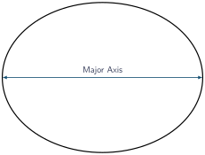
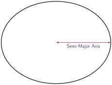
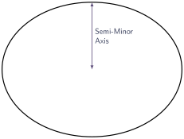
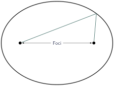
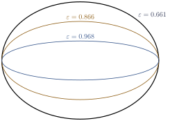
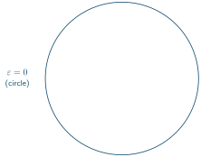
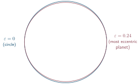
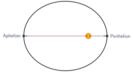

Kepler’s Ellipses
Jed Rembold
January 23, 2024
Announcements
- Homework 1 is posted!
- Partners revealed and introduction at end of class
- Example of a basic computational essay is on website as well
- Some of you still need to fill out the information gathering poll here
Today’s Plan
- What can we determine with positions?
- Kepler’s 1st Law
- Ellipse Math
- Ellipse Fitting
A Note on Packages
- Given that all of you generally fall into 1 of 2 camps (R or Python), where possible I’m going to try to not rely on package specific implementations
- That said, there are some common ones that will repeatedly come up:
- Python
- Pandas introduces dataframes, which makes ideas much more similar to R’s dataframes
- Matplotlib is still the workhorse of data visualization in Python
- Numpy will probably make occasional appearances for pure number crunching
- R
- Tidyverse brings so many nice quality of life improvements and added functionality
- ggplot is one of the best data visualization libraries I’ve seen
- Python
- Specific applied libraries may also spring up, but as much as possible I’ll try to give both camps equivalent options
Angular Separation
- Frequently it is useful to describe the angular
separation between two points (as seen from Earth)
- Pythagorean theorem will be close for small separations, but not quite accurate. Better to use: \[ \theta \approx \sqrt{\left(\left(\alpha_A - \alpha_B\right)\cos\delta_A\right)^2 + \left(\delta_A - \delta_B\right)^2} \] where \(\alpha\) indicates Right Ascension and \(\delta\) the Declination
- For small angles, you can relate the angle to a
physical separation through: \[
\frac{\theta}{360} = \frac{\text{separation}}{2\pi(\text{distance})}
\] where the \(\text{distance}\)
is the distance from the observer to the object in question
- Only really makes sense if both “ends” of the angle are the same distance away
Tycho Brahe
- Last real “naked-eye” astronomer
- Took very precise angle measurements of stars and planets
- Did not believe in a heliocentric universe, as he saw no stellar parallax
- Hired Johannes Kepler to analyze all his data
Johannes Kepler
- Kepler then spent 8 years trying to reconcile Tycho’s observations of Mars with the Ptolemaic (Earth centered) model
Who would have thought it possible? This hypothesis, which so closely agrees with the observed oppositions, is nevertheless false? If I had believed that we could ignore those 8 minutes, I would have patched up my hypothesis accordingly. But since it was not possible to ignore them, those 8 minutes point the road to a complete reform of astronomy…
Thou seest now, diligent reader, that the hypothesis based on this method not only satisfies the four positions on which it was based, but also correctly represents within 2 minutes all the other observations.
Nova Astronomica – Johannes Kepler
Kepler’s 1st Law
- The orbits of the planets are ellipses
- The Sun sits at one focus, with nothing at the other

An Ellipses Aside
Look like squished circles
Described by:
- Major Axis (longest width)
- Half lengths are “semi-”
- Minor Axis (shortest width)
- Foci distances
- Eccentricity (squished-ness)
- Major Axis (longest width)






Some Ellipse Math
You can always get the foci locations and eccentricity from the semi-major and minor axes.
- Foci: \[ f = \sqrt{a^2 - b^2} \]
- Eccentricity: \[ \varepsilon = \sqrt{1 - \frac{b^2}{a^2}} \]
- Area: \[ A = \pi a b \]
Elliptical Orbits
- Most planets in the Solar System have orbits that are not very eccentric




- The Sun is clearly not at the center however
More Vocab
- Apogee/Aphelion: The point at which a body is at its furthest from the Earth/Sun
- Perigee/Perihelion: The point at which a body is at its closest to the Earth/Sun

Pesky Ellipses
- Because the elliptical orbits that space objects follow are tied directly to some physical properties, it can be very useful to determine elliptical parameters
- The classic equation of an ellipse: \[ \frac{(x-x_c)^2}{a^2} + \frac{(y-y_c)^2}{b^2} = 1 \] allows for no rotations
- The general polynomial form: \[ Ax^2 + Bxy + Cy^2 + Dx + Ey + F = 0 \] doesn’t give obvious expressions for the desired parameters
Fitting Tactics
- There are a variety of approaches, most perform best when the
sampled points come from around the entire ellipse
- Different approaches can error in different ways if all points are from one side of the ellipse
- All the pre-built options required some odd libraries and worked in very different ways between Python and R
- So I found starting code for both and then customized to create
fitting options that work very similarly in both
- In Python: fitellipse.py
- In R: fitellipse.r
Library Explanation
- Both libraries introduce 3 functions. To get access to them, run or
import the library
- In Python:
run fitellipse.pyorfrom fitellipse import * - In R:
source('fitellipse.r')
- In Python:
- 3 functions:
fit_ellipse(x, y): Computes the best fit ellipse and returns both the coefficients and the common fit parameters as an associative array. Takes points to fit as lists of x and y coordinates.get_ellipse(fit_params): Computes a series of x and y points representing the given ellipse, wherefit_paramsis the output offit_ellipse. Useful for plotting purposescreate_test_ellipse(Rx,Ry,Cx,Cy,Rotation,NoiseLevel): creates a series of x and y coordinates representing an ellipse with the given parameters
Caveats
- Both fitting functions seem to do excellent at determining the center of the ellipse and major and minor axes
- There is some variability with the resulting angle, where it
sometimes comes out \(90^\circ\) off
(\(\pi/2\) technically since the angle
is in radians)
- I believe this stems from discrepancies with whether it ends up finding the angle from the major or minor axis, but I’ve spent hours trying to make it more robust and thus far failed
- Fortunately, the angle of the ellipse has absolutely no bearing on
any physical laws, and is only of interest for plotting purposes
- If the angle of the ellipse is wrong when plotting, add or subtract \(\pi/2\) from it
Example with Comet NeoWISE
- Comet NeoWISE made an appearance several years back
- That particular comet had a huge eccentricity and thus couldn’t easily be visualized
- A different NeoWISE comet though has its positions over the next 100 years stored here
- How could I estimate the eccentricity of this comet?
Activity!
- I have given you here the coordinates of Pluto over a 300 year span
- Your task: determining the closest approach Pluto makes with the
Sun. That is to say, what is its perihelion distance?
- Doing so will require working out the major axis and determining where the Sun would be
- A picture might help you keep things straight as you go
- Note: If you compare this value to the known value, it isn’t going to be perfect, owing to us not fully accounting for the tilt of Pluto’s orbit when computing the ellipse
Partners!
- I’m giving you a chance now to meet with your partner for HW1 to discuss schedules, strengths, weaknesses, and how you can best work together!
- Remember that there will be a check-in this weekend, so try to have at least something accomplished you can mention!
- Left rows (front to back)
- Kendall L and Paul M
- Sam H and Milena L
- Owyn W and Nico M
- Jennifer A and Nathaniel S
- Indi E and Zachary H
- Brandon R and Kara D
- Right rows (front to back)
- Axel S and Teo M
- Siera E and Jackson S
- Matthew N and Emma M
- Mia P and Teddy B
- Sophia R and Leila F
- Trajan C and Alex T
- Ben W and Michael K